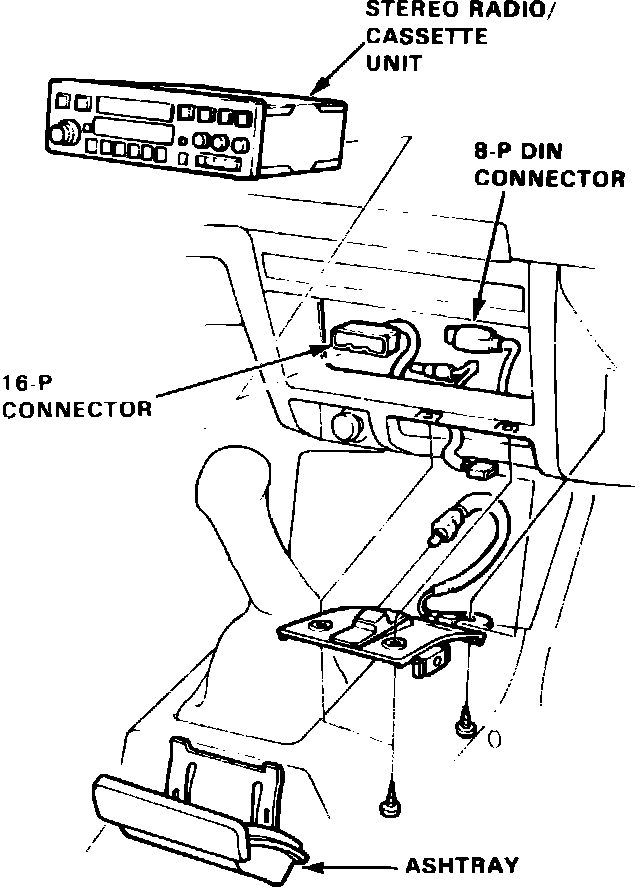

Radio/Stereo: Service and Repair
Fig. 17 Radio replacement. Integra:

1. Disconnect battery ground cable.
2. Remove ashtray and ashtray bracket.
3. Remove two lower radio attaching screws.
4. Push radio out from dash, then disconnect electrical connectors and antenna lead and remove radio, Fig. 17.
5. Reverse procedure to install.